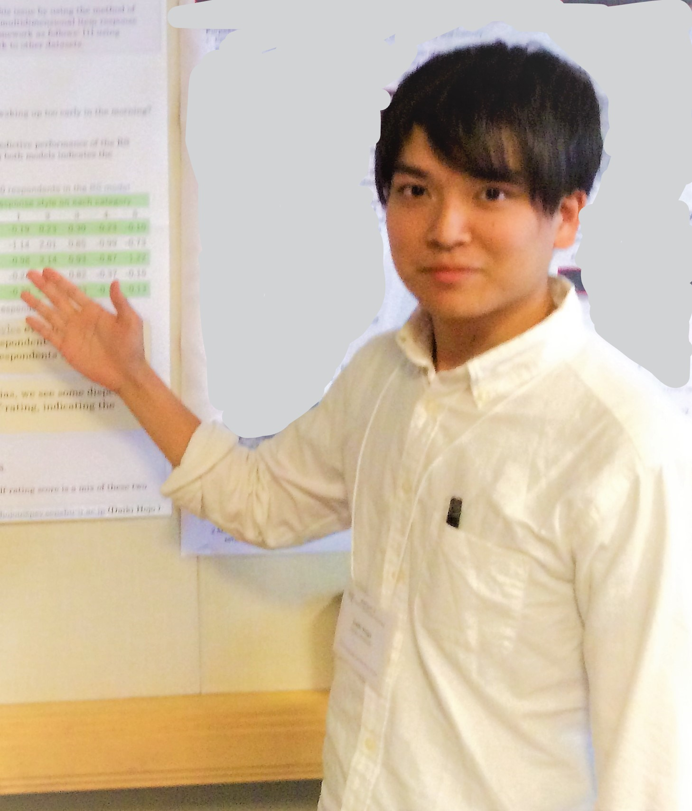

お問い合わせはこちら |

経歴
自己紹介と経歴

北條大樹(ほうじょうだいき, Daiki Hojo)
1993年 新潟県出身

学歴
2009(平成21)年4月 新潟県立新潟南高等学校 入学
2012(平成24)年3月 同上 卒業
2012(平成24)年4月 専修大学人間科学部心理学科 入学
2016(平成28)年3月 同上 卒業(卒論指導教員 岡田謙介)
2016(平成28)年4月 専修大学大学院文学研究科心理学専攻 修士課程 入学
2018(平成30)年3月 同上 修了(修士:心理学)
(修論指導教員 主:岡田謙介, 副:長田洋和)
2018(平成30)年4月 東京大学大学院 教育学研究科 博士後期課程 入学
2022(令和4)年3月 同上 単位取得満期退学
所属学会
日本行動計量学会/日本計算機統計学会/日本テスト学会/日本教育心理学会/日本心理学会/人工知能学会
受賞
2019年06月 SIG-SAI(一般社団法人人工知能学会) 研究会優秀賞(責任発表者 髙岡昂太, 第3著者 北條)
2018年02月 第10回日本不安症学会 若手優秀演題賞(責任発表者 二瓶正登, 第2著者 北條)
2018年02月 第１回 和歌山県データ利活用コンペティション 和歌山県賞 大賞
2018年02月 第１回 和歌山県データ利活用コンペティション 協賛企業賞 SAS賞
2017年01月 野村総研 NRIデータ分析コンテスト2016 最優秀賞
2016年11月 日本計算機統計学会 第30回シンポジウム 学生研究発表賞
2016年05月 日本テスト学会 池田・柳井スカラシップ
2015年11月 NTT数理システム 学生研究発表賞 佳作
2014年11月 NTT数理システム 学生研究発表賞 佳作